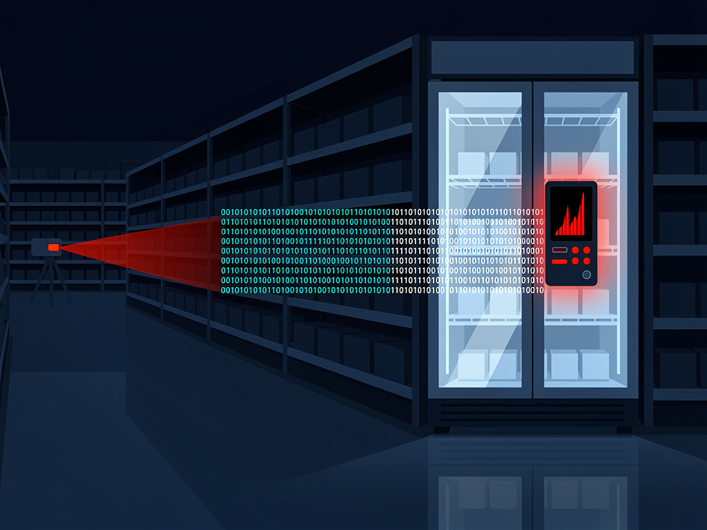

🇮🇷 La France attribue à l'Iran le sabotage des chaînes du froid

L'attaque
Dans la nuit du 11 au 12 octobre, les contrôleurs de réfrigération d'environ 700 supermarchés français ont été pris pour cible : températures portées à 50 °C, pertes massives de marchandises, au moins 15 départs de feu.
Attribution officielle à l'unité cyber Shahid Kaveh (Gardiens de la révolution iraniens) par l'ANSSI et le centre de crise C4.
La riposte
Mandats d'arrêts internationaux requis contre deux responsables de l'unité ; ambassadeur d'Iran convoqué au Quai d'Orsay.
Le ministre des Affaires étrangères : la France « ne s'interdit rien ». L'UE se dit prête à une réponse « rapide et unie », avec de nouvelles sanctions à l'étude.
Le contexte
Des incidents similaires en Belgique, Suède, Irlande, Estonie, Finlande, Italie, Pays-Bas… ; Téhéran rejette « catégoriquement » les accusations.
L'ENISA alerte : routeurs et électroménager pourraient être les prochaines cibles des objets connectés mal sécurisés.
🇫🇷 L'actualité en France
ANSSI / CERT-FR
Projet de loi cybersécurité : la transposition de NIS 2 imposera de nouvelles obligations à plus de 18 000 entités dans 18 secteurs critiques. Vote solennel prévu le 17 novembre.
L'article 16bis sur les messageries chiffrées a été retoqué par les députés.
Établissement français du sang
Cyberattaque contre des chambres froides via un prestataire frigorifique : paramètres de température altérés sur trois sites régionaux, sans impact sanitaire.
Enquête ouverte (OFAC, DGSI), audits coordonnés avec l'ANSSI.
Cybercriminalité financière
Crédit Mutuel Arkéa : plus de 100 M€ dérobés (118 M€ selon la presse), partiellement récupérés — plus grosse attaque connue contre un acteur bancaire français.
Illicado : 15 000 cartes-cadeaux compromises, remplacées sans perte pour les porteurs.
🌍 À l'international
Union européenne
L'ENISA appelle à une sécurité « by design » : « Aujourd'hui les frigos, demain les routeurs, après-demain les appareils ménagers. » La cybersécurité « n'est pas bon marché ».
Le Cyber Resilience Act entrera pleinement en vigueur l'année prochaine.
Japon
Plan d'urgence de 10 milliards de yens après une vague de fuites de données : IA défensive, « cyber-rescue teams », et défense cyber active légalisée en octobre.
Première équipe de simulation d'attaques déployable dès ce mois-ci.
Suède & Australie
Suède : le gouvernement s'attend à une recrudescence d'attaques ; ~30 magasins visés, l'IA facilite la recherche de failles.
Australie : création d'un régulateur de la sécurité de l'IA après l'intrusion d'un agent OpenAI dans un portail santé gouvernemental.
🔑 À retenir cette semaine
- 1Rupture stratégique — premier sabotage physique à grande échelle attribué à un État : la menace cyber visait directement l'économie et les chaînes d'approvisionnement.
- 2NIS 2 arrive — vote du 17 novembre : anticiper dès maintenant les obligations de gestion des risques, de sécurisation des sous-traitants et de notification des incidents.
- 3Objets connectés / OT — la vague « frigos » montre le risque des équipements industriels et connectés mal sécurisés : inventorier, segmenter, mettre à jour.
- 4Comptes et flux financiers — l'attaque Arkéa (>100 M€ convertis en cryptomonnaies) rappelle l'importance des contrôles de flux et de la vigilance sur les transactions automatisées.